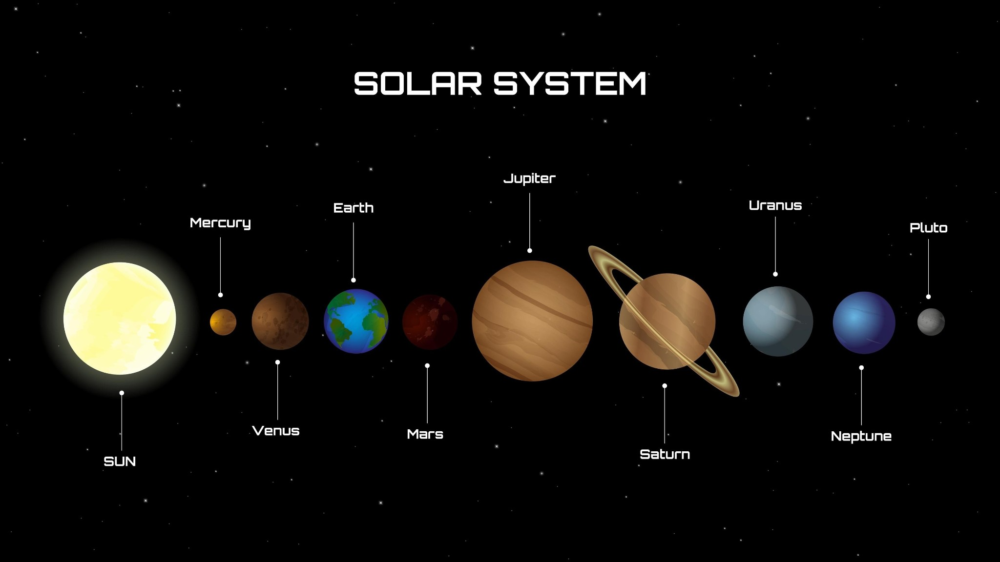
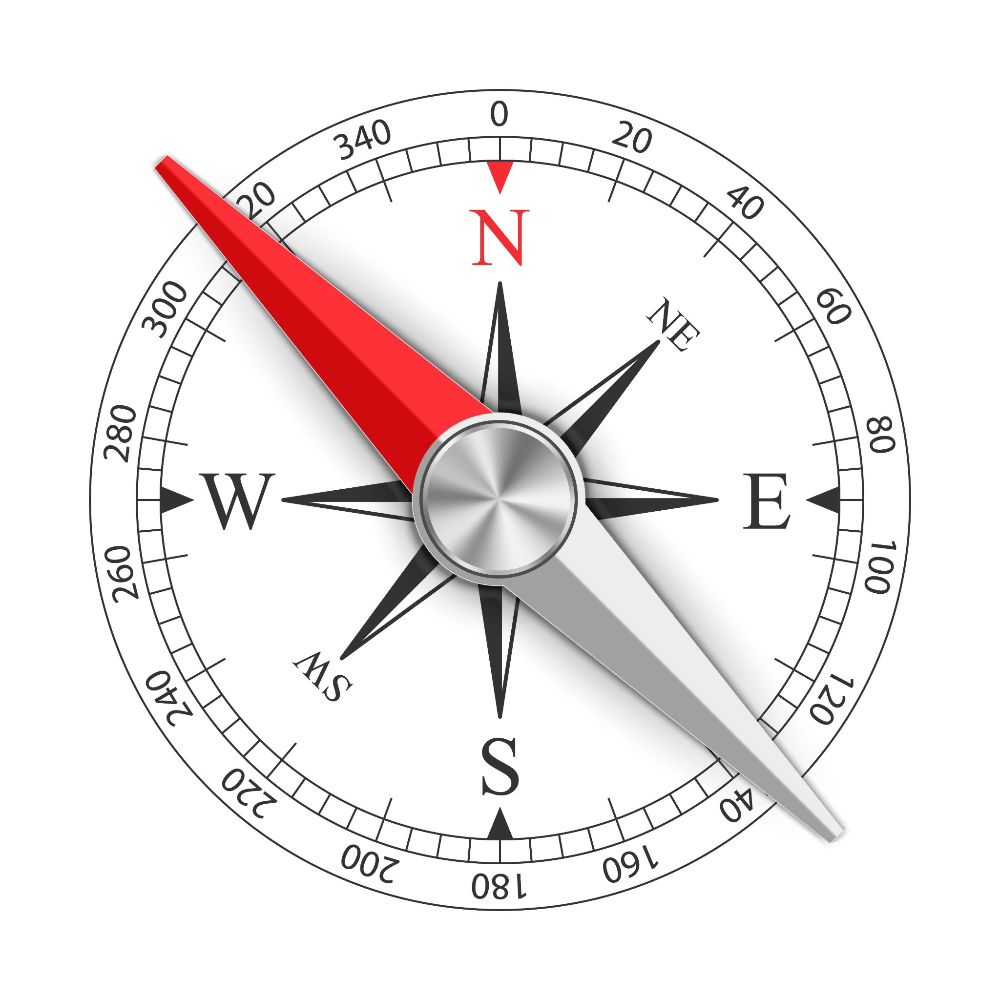

A tecnologia é o conjunto de todas as invenções que os seres humanos criam para facilitar a vida (tornar as tarefas mais rápidas, seguras ou fáceis).
1. TRANSPORTES:
- Antigamente: As deslocações eram muito lentas. As pessoas iam a pé ou usavam animais (cavalos, burros, carroças). Para atravessar oceanos, usavam caravelas que dependiam do vento.
- Evolução: Surgiu a máquina a vapor (comboios e barcos a vapor). Mais tarde, os motores a combustível permitiram criar o automóvel e o avião.
- Hoje: Temos aviões rápidos, comboios de alta velocidade e carros elétricos que protegem o ambiente.
2. TELECOMUNICAÇÕES:
- Antigamente: Comunicar à distância era difícil. Usavam-se cartas que demoravam semanas a chegar, ou mensageiros.
- Evolução: Inventou-se o telégrafo, depois o telefone fixo e a rádio.
- Hoje: Usamos telemóveis, internet e videochamadas. A informação viaja à velocidade da luz!
- O Telefone: Inventado por Graham Bell em 1876. Substituiu o Telégrafo.
- O Avião: No início eram feitos de madeira e lona. Hoje transportam centenas de pessoas.
- A Internet: Antigamente pesquisava-se em enciclopédias pesadas; hoje temos tudo no telemóvel.
1. O que define a tecnologia?
2. Como as pessoas se deslocavam antes de existirem motores?
3. Qual destes é um meio de transporte que circula sobre carris?
4. Antigamente, qual era o principal meio de comunicação à distância?
5. Qual é uma vantagem dos transportes modernos em comparação com os antigos?
6. O que usamos hoje para ver e ouvir uma pessoa em tempo real, mesmo estando longe?
7. Qual destes é um exemplo de telecomunicação moderna?
8. A internet mudou a forma como comunicamos porque:
9. Qual transporte revolucionou as viagens através dos oceanos pela sua rapidez?
10. O que é necessário para usar a maioria das telecomunicações modernas hoje?
11. Os primeiros comboios moviam-se com a ajuda de:
12. Se quisermos enviar uma mensagem escrita urgente hoje, usamos:
13. Qual destes transportes é considerado "amigo do ambiente" por não usar combustíveis fósseis?
14. O que mudou nos transportes e telecomunicações ao longo do tempo?
15. Qual é o meio de transporte mais rápido para ir de Portugal ao Brasil?
16. O telemóvel serve para:
17. Antigamente, as notícias demoravam dias a chegar. Hoje sabemos o que acontece no mundo na hora graças à:
18. Qual destes é um transporte aquático moderno?
19. A evolução da tecnologia nos transportes permitiu:
20. Qual a principal função das telecomunicações?
A biodiversidade é a variedade de vida na Terra. Ao longo do tempo, algumas espécies desaparecem e outras ficam em perigo.
1. SERES EXTINTOS:
- Significa que já não resta nenhum ser vivo dessa espécie no mundo inteiro.
- Quando morre o último, a espécie desaparece para sempre.
- Exemplos: Dinossauros, Pássaro Dodo, Mamute.
2. SERES EM RISCO DE EXTINÇÃO:
- São espécies que ainda existem, mas em números muito pequenos.
- Se não forem protegidas, podem tornar-se extintas em breve.
- Exemplos: Lince-Ibérico, Panda Gigante, Baleia-Azul, Tartaruga-Marinha.
3. CAUSAS DO DESAPARECIMENTO:
- Destruição de habitats (cortar florestas, poluir rios).
- Poluição (plásticos no mar, químicos no solo).
- Caça e pesca excessiva ou ilegal.
- Alterações climáticas (o planeta aquece e o gelo derrete).
4. PROTEÇÃO E CONSERVAÇÃO:
- Criação de Parques Naturais e Reservas.
- Leis que proíbem a caça de animais protegidos.
- Centros de recuperação e reprodução (como o do Lince-Ibérico).
- O Dodo: Vivia na ilha Maurícia. Era uma ave que não voava. Ficou extinta porque não estava preparada para os cães e porcos que os humanos levaram para a ilha.
- O Lince-Ibérico: É um dos felinos mais raros do mundo. Portugal e Espanha têm trabalhado muito para o salvar e hoje a população está a crescer!
1. O que significa dizer que um animal está "extinto"?
2. O Lince-Ibérico é um exemplo de um animal que está:
3. Qual destes animais já está extinto?
4. O que é o "habitat" de um animal?
5. Qual é uma das principais causas da extinção de espécies causada pelo Homem?
6. Porque é que a poluição dos oceanos é perigosa para as tartarugas marinhas?
7. Os Parques Naturais servem para:
8. O que acontece se cortarmos todas as árvores de uma floresta?
9. O Panda Gigante é conhecido por ser um símbolo de:
10. A caça ilegal é:
11. Qual destes fatores pode levar à extinção natural (sem ajuda do Homem)?
12. Para evitar a extinção, as pessoas devem:
13. O que é a "biodiversidade"?
14. O Urso Polar está em risco principalmente por causa de:
15. O Pássaro Dodo ficou extinto porque:
16. O que podemos fazer no dia a dia para ajudar o planeta?
17. Os jardins zoológicos modernos têm programas para:
18. Qual é o papel dos cientistas na proteção dos animais?
19. Se uma espécie de planta desaparecer, o que acontece aos animais que a comiam?
20. Proteger a natureza é importante porque:
O nosso planeta precisa que cuidemos dele para que a água continue limpa e o ar puro.
1. A IMPORTÂNCIA DO OCEANO:
- Dá-nos oxigénio (através das algas e plantas marinhas).
- Regula a temperatura da Terra.
- É a casa de milhares de espécies.
2. AMEAÇAS AO MEIO AMBIENTE:
- Poluição Marinha: O plástico é o maior perigo. Animais como tartarugas e baleias podem morrer ao comer lixo.
- Desperdício de Recursos: Gastar água e luz sem necessidade prejudica o planeta.
3. OS 3 R'S DA SUSTENTABILIDADE:
- REDUZIR: Comprar menos coisas e evitar embalagens desnecessárias.
- REUTILIZAR: Usar os objetos mais do que uma vez (ex: garrafa de água reutilizável).
- RECICLAR: Separar o lixo para que seja transformado em novos materiais.
4. SEPARAÇÃO NO ECOPONTO:
- AMARELO: Plástico e Metal (latas, pacotes de leite, iogurtes).
- AZUL: Papel e Cartão (caixas, revistas, cadernos velhos).
- VERDE: Vidro (garrafas e frascos). *Atenção: Espelhos e loiça não vão aqui!
Para não esqueceres: "Azul é papel, Verde é vidro, Amarelo é o resto das embalagens!"
- Microplásticos:
- Às vezes o plástico não desaparece.
- Ele parte-se em pedacinhos muito, muito pequenos, quase como pó.
- Esses pedacinhos chamam-se microplásticos.
- Eles são tão pequenos que:
- os peixes podem engolir sem perceber
- entram na água e nos rios
- podem acabar na comida dos animais
- Exemplo fácil de imaginar:
- Imagina uma garrafa de plástico no mar.
- Com o sol, o vento e as ondas ela vai quebrando em pedaços cada vez menores.
- Primeiro vira pedaços grandes…
- Depois pedaços pequenos…
- Depois pó de plástico.
- Esse "pó de plástico" são os microplásticos.
1. Por que razão o oceano é chamado de "pulmão do planeta"?
2. Qual destes materiais demora centenas de anos a desaparecer na natureza?
3. Onde devemos colocar uma lata de refrigerante vazia?
4. O que significa "Reduzir"?
5. Se usares um frasco de vidro de maionese para guardar sementes, estás a:
6. Qual é o destino correto para uma caixa de cartão de uma pizza (sem gordura)?
7. O que acontece aos animais marinhos que comem plástico por engano?
8. Qual destas ações ajuda a poupar água em casa?
9. O que são microplásticos?
10. As pilhas usadas devem ser colocadas no:
11. O que não devemos fazer quando vamos à praia?
12. O papel higiénico e os lenços de papel sujos devem ir para o:
13. Reciclar é importante porque:
14. Qual o ecoponto para uma garrafa de água de plástico?
15. Como podemos ajudar a reduzir a poluição do ar?
16. O que é o "consumo sustentável"?
17. No ecoponto verde, colocamos:
18. Qual é a cor do ecoponto para as embalagens de iogurte?
19. Por que não devemos deitar óleo de fritar no cano do lava-loiça?
20. Qual é a melhor forma de levar o lanche para a escola para não poluir?
O Sistema Solar é o conjunto de astros que giram em torno de uma estrela central: o Sol.
1. O SOL:
- É a nossa estrela. Fornece luz e calor essenciais à vida.
- É muito maior que todos os planetas juntos.
2. OS PLANETAS (8 principais):
- Planetas Rochosos (perto do Sol): Mercúrio, Vénus, Terra e Marte.
- Planetas Gasosos/Gigantes (mais distantes): Júpiter, Saturno, Urano e Neptuno.

3. A TERRA E A LUA:
- A Terra é o 3º planeta a contar do Sol.
- A Lua é o nosso único satélite natural. Ela não brilha por si, reflete a luz solar.
4. MOVIMENTOS DA TERRA:
- ROTAÇÃO: A Terra gira sobre si mesma (como um pião). Demora 24 horas e cria o DIA e a NOITE.
- TRANSLAÇÃO: A Terra gira à volta do Sol. Demora 365 dias (1 ano) e cria as ESTAÇÕES DO ANO.
- Saturno não é o único com anéis, mas são os mais brilhantes e bonitos!
- Júpiter é tão grande que caberiam 1300 Terras dentro dele.
- Mercúrio é o mais rápido a dar a volta ao Sol, mas Vénus é o mais quente.
1. Qual é o astro que está no centro do Sistema Solar?
2. Quantos planetas principais existem no nosso Sistema Solar?
3. Qual é a posição da Terra em relação à distância do Sol?
4. O Sol é classificado como:
5. Qual é o maior planeta do Sistema Solar?
6. Qual destes planetas é conhecido pelos seus grandes anéis visíveis?
7. A Lua é considerada:
8. Qual é o planeta conhecido como o "Planeta Vermelho"?
9. Por que razão a Terra é o único planeta conhecido com vida?
10. Qual é o planeta mais próximo do Sol?
11. O que aconteceria se o Sol deixasse de existir?
12. A Lua tem luz própria?
13. Qual destes é o planeta mais distante do Sol?
14. Como se chama o caminho que os planetas fazem à volta do Sol?
15. Qual é o planeta mais quente do Sistema Solar?
16. O movimento que a Terra faz à volta de si mesma chama-se:
17. O movimento de Rotação da Terra (girar como um pião) dá origem a:
18. A Via Láctea é o nome:
19. O instrumento usado para observar melhor os planetas e estrelas é o:
20. Qual destes planetas é um "gigante gelado"?
Para estudarmos a Terra, precisamos de modelos que a representem, pois o planeta é demasiado grande para vermos todo de uma vez.
1. GLOBO TERRESTRE:
- É a representação mais fiel e exata da Terra.
- Tem forma esférica.
- Não deforma os continentes, mas não permite ver o mundo todo ao mesmo tempo.
2. PLANISFÉRIO (MAPA-MÚNDI):
- É uma representação plana (numa folha).
- Permite ver todos os continentes e oceanos de uma só vez.
- Provoca pequenas deformações nas formas e tamanhos para conseguir "esticar" a esfera no papel.
3. ELEMENTOS DE UM MAPA:
- TÍTULO: Indica o que o mapa mostra.
- LEGENDA: Explica os símbolos e as cores.
- ESCALA: Indica quantas vezes a realidade foi reduzida.
- ROSA DOS VENTOS: Indica a orientação (Norte, Sul, Este, Oeste).
Antigamente, como os navegadores não conheciam todo o mundo, os mapas tinham espaços em branco ou desenhos de monstros onde hoje sabemos que existem continentes!
1. Qual é a representação da Terra que mais se aproxima da sua forma real?
2. O que é um planisfério?
3. Qual é a principal vantagem de usar um planisfério em vez de um globo?
4. Como se chama a pessoa que desenha e faz mapas?
5. Num mapa, o que nos ajuda a perceber o que significam os símbolos e cores?
6. A "Rosa dos Ventos" num mapa serve para:
7. O que nos indica o "Título" de um mapa?
8. Por que razão o globo terrestre tem de ser rodado?
9. A escala num mapa serve para:
10. Qual destas cores é quase sempre usada para representar oceanos e rios?
11. Se quisermos levar um mapa na mochila para uma caminhada, o que é mais prático?
12. Os mapas antigos eram menos precisos porque:
13. Onde é que a forma dos continentes aparece mais "deformada"?
14. Numa legenda, um triângulo preto costuma representar:
15. A linha imaginária que divide a Terra em Hemisfério Norte e Sul chama-se:
16. Qual é o nome do mapa que representa todo o mundo de forma plana?
17. Os satélites ajudam a fazer mapas modernos porque:
18. O que representa a cor verde na maioria dos mapas físicos?
19. Para que serve um mapa político?
20. Qual é a forma geométrica que mais se parece com o globo terrestre?
Para não nos perdermos, precisamos de saber onde estamos e para onde vamos.
1. OS PONTOS CARDEAIS:
- NORTE (N): À nossa frente (quando orientados pelo sol).
- SUL (S): Atrás de nós.
- ESTE (E) ou NASCENTE: Onde o Sol nasce.
- OESTE (O) ou POENTE: Onde o Sol se põe.
2. ORIENTAÇÃO PELO SOL:
- Braço direito para o Nascente (Este).
- Braço esquerdo para o Poente (Oeste).
- À frente: Norte.
- Atrás: Sul.
3. INSTRUMENTOS:
- BÚSSOLA: Tem uma agulha magnética que aponta para o Norte.

- GPS: Usa satélites para dar a localização exata no telemóvel ou carro.
- ROSA DOS VENTOS: Desenho que mostra as direções nos mapas.
1. Quantos são os pontos cardeais principais?
2. Onde é que o Sol nasce todas as manhãs?
3. Como se chama o ponto cardeal oposto ao Norte?
4. A agulha magnética de uma bússola aponta sempre para o:
5. Se o teu braço direito aponta para o Este, o que tens à tua frente?
6. Qual é a sigla utilizada para representar o Oeste?
7. O "Poente" é outro nome para o ponto cardeal:
8. Para que serve a Rosa dos Ventos nos mapas?
9. Qual destes é um instrumento moderno de localização que usa satélites?
10. O Sol põe-se ao fim do dia no:
11. Os marinheiros de antigamente usavam o quê para se orientarem à noite?
12. O ponto colateral que fica entre o Norte e o Este chama-se:
13. Se quiseres ir para uma cidade que fica a Sul, mas estás a caminhar para Norte, estás a ir na direção:
14. A bússola funciona porque a Terra se comporta como um gigante:
15. Qual é o nome do ponto cardeal que fica à esquerda de quem olha para o Norte?
16. Num mapa, o Norte costuma estar representado na parte:
17. O GPS pode ser encontrado em:
18. Qual é o movimento da Terra que faz parecer que o Sol se move no céu?
19. Se estiveres perdido numa floresta num dia de sol, podes descobrir o Norte usando:
20. Para que serve saber os pontos cardeais?
A Terra parece parada, mas o seu interior está em constante movimento!
1. SISMOS (TERRAMOTOS):
- São vibrações da superfície terrestre.
- Causa: Movimento das placas tectónicas (peças do puzzle da crosta terrestre).
- HIPOCENTRO: Lugar no interior da Terra onde o sismo começa.
- EPICENTRO: Lugar na superfície, por cima do hipocentro, onde o sismo é mais forte.
2. VULCÕES:
- São aberturas na crosta terrestre que ligam o interior quente ao exterior.
- MAGMA: Rocha derretida enquanto está dentro da Terra.
- LAVA: Nome do magma quando sai para o exterior.
- PARTES: Cratera (abertura no topo), Chaminé (canal de subida), Cone (formato de montanha).
3. SEGURANÇA (EM CASO DE SISMO):
- BAIXAR, PROTEGER e AGUARDAR.
- Não usar elevadores.
- Afastar-se de janelas ou objetos que possam cair.
- Vulcões Adormecidos: Existem vulcões que não "explodem" há centenas de anos, mas podem acordar!
- Ilhas Novas: Ilhas como os Açores foram criadas por lava que arrefeceu no mar.
1. O que causa um sismo?
2. Como se chama o ponto no interior da Terra onde o sismo tem origem?
3. O que é o epicentro?
4. Um vulcão é uma abertura na crosta terrestre que liberta:
5. Qual é a diferença entre magma e lava?
6. Como se chama o "buraco" no topo do vulcão por onde sai a lava?
7. O que devemos fazer se estivermos dentro de casa durante um sismo?
8. Como se chama o canal por onde o magma sobe até à superfície?
9. Um vulcão que pode entrar em erupção a qualquer momento chama-se:
10. As cinzas vulcânicas podem ser perigosas porque:
11. Qual é o aparelho que os cientistas usam para medir a força dos sismos?
12. O sismo que ocorre no fundo do mar e pode causar ondas gigantes chama-se:
13. Por que razão não devemos usar o elevador durante um sismo?
14. As placas tectónicas movem-se:
15. O que é um vulcão extinto?
16. Depois de um sismo passar, o que devemos fazer?
17. A lava, quando arrefece, transforma-se em:
18. A zona com mais vulcões no mundo chama-se:
19. O que é um sismo de baixa intensidade?
20. Os vulcões podem ser úteis porque:
O oceano sofre com várias atividades humanas:
1. PESCA EXCESSIVA: Retirar peixes do mar mais depressa do que eles nascem.
2. DERRAMES DE PETRÓLEO: Acidentes com navios que sujam a água com óleo preto e colante.
3. LIXO MARINHO: Plásticos que formam ilhas gigantes e sufocam animais.
4. DESTRUIÇÃO DE HABITATS: Estragar "casas" como os recifes de coral.
1. O que acontece na "pesca excessiva"?
2. Qual é o principal perigo de um derrame de petróleo para as aves marinhas?
3. As "ilhas de lixo" no oceano são formadas principalmente por:
4. O que é um habitat marinho?
5. Porque é que a destruição dos corais é má para os peixes pequenos?
6. O que são os microplásticos?
7. As redes de pesca "fantasma" são:
8. Como podemos evitar que o lixo chegue ao oceano?
9. O petróleo no mar impede a entrada de:
10. A pesca por "arrasto" é prejudicial porque:
11. Qual destas é uma consequência da poluição química nos oceanos?
12. Para proteger os oceanos, os governos criam:
13. As tartarugas marinhas confundem sacos de plástico com:
14. O branqueamento dos corais acontece quando:
15. O que significa consumo sustentável de peixe?
16. Qual é o impacto dos derrames de petróleo na economia?
17. O plástico no mar demora quanto tempo a desaparecer?
18. Como é que o ruído dos barcos afeta as baleias?
19. O que podes fazer para ajudar os oceanos?
20. Proteger os oceanos é importante porque eles:
O crescimento da população mundial (mais de 8 mil milhões) traz desafios:
1. CONSUMO DE RECURSOS: Precisamos de mais água, comida e energia para todos.
2. LIXO URBANO: As cidades produzem montanhas de resíduos que precisam de tratamento.
3. ESPAÇO: Cortam-se florestas para construir casas, tirando abrigo aos animais.
1. Atualmente, a população mundial é de cerca de:
2. O aumento da população mundial leva a um maior consumo de:
3. O que acontece quando muitas pessoas vivem juntas em grandes cidades?
4. Porque é que a água potável pode faltar com o aumento da população?
5. O que é o "desmatamento" ou "desflorestação"?
6. Qual é uma consequência de cortar demasiadas árvores?
7. O consumo excessivo de energia contribui para:
8. Como podemos reduzir o impacto do lixo nas cidades?
9. O que é o desenvolvimento sustentável?
10. Cidades com muitas pessoas costumam ter mais problemas de:
11. O aumento da população mundial exige que se produza mais comida. Isto pode causar:
12. Qual é a vantagem de usar transportes públicos (autocarro, metro) em cidades populosas?
13. O que podes fazer para poupar água em casa?
14. Reciclar papel ajuda a salvar:
15. O lixo eletrónico (telemóveis e computadores velhos) deve ser:
16. O que acontece se a população continuar a crescer sem cuidarmos do ambiente?
17. A energia solar e eólica são boas porque:
18. Para reduzir o desperdício alimentar numa família grande, devemos:
19. As hortas urbanas nas cidades ajudam a:
20. O papel de cada cidadão na proteção do ambiente é: